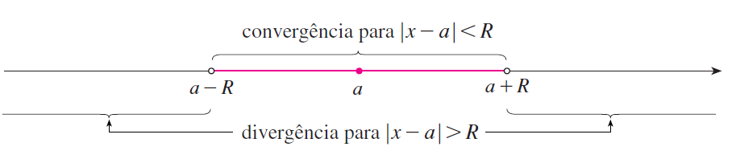

PARTE 4 · AULAS 69–71
Séries de potências
Séries de potências são séries infinitas que dependem de uma variável \(x\). Dependendo do valor atribuído a essa variável, a série pode convergir ou divergir. Nesta seção estudaremos sua definição, o centro da série, o raio e o intervalo de convergência, a análise dos extremos e o uso do Teste da Razão para determinar onde uma série de potências representa uma função.
1. O que é uma série de potências?
Uma série de potências em \(x\) é uma série infinita da forma
Escrevendo os primeiros termos, temos
Os números
são constantes denominadas coeficientes da série, enquanto \(x\) é uma variável.
A diferença fundamental em relação às séries numéricas estudadas anteriormente é que agora a convergência pode depender do valor de \(x\).
Para cada valor fixado de \(x\), a série de potências transforma-se em uma série numérica. Essa série poderá convergir ou divergir.
2. Uma série de potências define uma função
Quando a série converge, sua soma depende do valor de \(x\). Podemos, portanto, definir uma função por
Ou, desenvolvendo a série,
O domínio dessa função não precisa ser todo o conjunto dos números reais. Ele é formado precisamente pelos valores de \(x\) para os quais a série converge.
3. Exemplo introdutório: a série geométrica
Considere o caso em que
para todo \(n\). Obtemos
Essa é uma série geométrica com primeiro termo \(1\) e razão \(x\).
Sabemos que uma série geométrica converge quando o módulo da razão é menor que \(1\). Portanto,
Equivalentemente,
Nesse intervalo,
Assim, uma mesma expressão
converge para alguns valores de \(x\) e diverge para outros. Esse é o comportamento característico das séries de potências.
4. Séries de potências centradas em \(a\)
A forma mais geral estudada nas aulas é
Desenvolvendo os primeiros termos,
Essa expressão é denominada série de potências em \((x-a)\) ou série de potências centrada em \(a\).
O número \(a\) recebe o nome de centro da série.
\(a\): centro da série.
\(c_n\): coeficientes da série.
5. Convergência no centro
Uma propriedade imediata aparece quando substituímos
Nesse caso,
Logo,
Portanto, uma série de potências centrada em \(a\) sempre converge em seu centro.
6. Como pode ser o conjunto de convergência?
Para uma série de potências
existem três possibilidades para os valores de \(x\) em que ocorre convergência.
1. A série converge somente no centro:
2. A série converge para todo \(x\in\mathbb{R}\).
3. Existe um número \(R>0\) tal que
implica convergência, enquanto
implica divergência.
O número \(R\) que aparece nessa classificação é denominado raio de convergência.
7. Raio de convergência
O raio de convergência descreve a distância, medida a partir do centro \(a\), dentro da qual a série converge.
Há três casos.
Se a série converge apenas quando \(x=a\), então
Se a série converge para todo \(x\in\mathbb{R}\), então
Se
então a série converge para
e diverge para
8. Do raio ao intervalo de convergência
Quando
a desigualdade
é equivalente a
Somando \(a\) aos três membros,
Assim, inicialmente obtemos o intervalo aberto

9. O que acontece nos extremos?
A condição
não fornece informação sobre os pontos
Cada extremo deve ser substituído diretamente na série original. A série numérica resultante deve então ser estudada por algum dos testes de convergência vistos anteriormente.
Dependendo do comportamento dos dois extremos, o intervalo de convergência poderá ser
ou
10. Determinação do raio pelo Teste da Razão
Em muitos problemas, o Teste da Razão é a maneira mais conveniente de determinar o raio de convergência.
Para
estudamos
Pelo Teste da Razão, buscamos os valores de \(x\) para os quais
A desigualdade resultante normalmente pode ser escrita na forma
permitindo identificar o centro e o raio de convergência.
11. Procedimento para determinar raio e intervalo
- Identifique o centro \(a\) da série.
- Aplique, em geral, o Teste da Razão ou, quando conveniente, o Teste da Raiz.
- Determine os valores de \(x\) para os quais o teste fornece convergência.
- Escreva a condição obtida na forma \[ |x-a|<R. \]
- Identifique o raio \(R\).
- Determine os candidatos a extremos: \[ a-R \qquad\text{e}\qquad a+R. \]
- Substitua cada extremo separadamente na série original.
- Classifique as séries numéricas obtidas nos extremos como convergentes ou divergentes.
- Escreva o intervalo de convergência com os parênteses ou colchetes adequados.
12. Exemplo: série centrada em \(3\)
Determine os valores de \(x\) para os quais converge
O centro da série é
Definimos
Pelo Teste da Razão,
Simplificando,
Logo,
O Teste da Razão fornece convergência absoluta quando
Resolvendo a desigualdade,
e, portanto,
Assim,
Ainda precisamos analisar separadamente os extremos \(x=2\) e \(x=4\).
Esse é exatamente o desenvolvimento usado nas aulas: o Teste da Razão produz \(|x-3|<1\), isto é, \(2<x<4\), mas não resolve o comportamento nos extremos.
13. Análise do extremo \(x=4\)
Substituindo \(x=4\) na série original,
Obtemos a série harmônica,
que diverge.
Portanto,
não pertence ao intervalo de convergência.
14. Análise do extremo \(x=2\)
Agora substituímos \(x=2\):
Trata-se de uma série alternada.
Como
e \(1/n\) é uma sequência decrescente, a série converge pelo Teste da Série Alternada.
Portanto,
pertence ao intervalo de convergência.
Nas aulas, o extremo \(x=4\) produz a série harmônica divergente, enquanto \(x=2\) produz uma série alternada convergente. Por isso, o intervalo final é \([2,4)\).
15. Uma série com raio \(R=0\)
Considere
Para \(x\neq0\), seja
Pelo Teste da Razão,
Assim,
Para qualquer \(x\neq0\),
Portanto, a série diverge para todo \(x\neq0\).
Para \(x=0\), entretanto, a série converge.
Logo,
e o conjunto de convergência é
16. Uma série com raio \(R=\infty\)
Também existem séries de potências que convergem para qualquer número real \(x\).
Nas aulas, isso aparece na série que define a função de Bessel de ordem zero:
Se
o Teste da Razão conduz a
Para qualquer valor real fixado de \(x\),
Como
a série converge para todo \(x\in\mathbb{R}\).
Esse exemplo mostra que uma série de potências pode definir uma função em toda a reta real.
17. Séries de potências e aproximações por somas parciais
Se uma função é definida por uma série de potências,
podemos aproximá-la utilizando apenas um número finito de termos.
A \(N\)-ésima soma parcial é
Para os valores de \(x\) em que a série converge,
Portanto, as somas parciais são polinômios que podem ser utilizados como aproximações da função representada pela série.
No exemplo da função de Bessel apresentado nas aulas, as primeiras somas parciais são
e
À medida que mais termos são incorporados, as somas parciais fornecem aproximações da função \(J_0(x)\).
18. Exemplo: raio \(R=\frac13\)
Determine o raio e o intervalo de convergência de
Seja
Pelo Teste da Razão,
Quando \(n\to\infty\),
Logo,
A convergência ocorre quando
isto é,
Portanto,
19. Análise dos extremos do exemplo anterior
Precisamos analisar
Para
a série torna-se
Trata-se de uma série \(p\) com
portanto diverge.
Para
obtemos
que converge pelo Teste da Série Alternada.
Portanto,
20. Exemplo com centro diferente de zero
Considere a série
Como
o centro é
Pelo Teste da Razão,
Fazendo \(n\to\infty\),
A série converge quando
ou seja,
Logo,
Resolvendo a desigualdade,
portanto,
21. Testando \(x=-5\) e \(x=1\)
No extremo esquerdo, \(x=-5\),
Assim, a série torna-se
Os termos
não tendem a zero. Portanto, a série diverge pelo Teste da Divergência.
No extremo direito, \(x=1\),
e obtemos
que também diverge.
Portanto, nenhum dos extremos pertence ao intervalo.
22. Centro, raio e intervalo são informações diferentes
É importante distinguir claramente essas três informações.
Centro: é o número \(a\) que aparece em \[ (x-a)^n. \]
Raio de convergência: é a distância \(R\) do centro até os candidatos a extremos do intervalo.
Intervalo de convergência: é o conjunto completo dos valores reais de \(x\) para os quais a série converge, incluindo ou não os extremos.
Quando \(0<R<\infty\), os candidatos a extremos são sempre
Mas apenas a substituição desses valores na série permite decidir se eles pertencem ao intervalo.
23. Interpretação geométrica do raio
O raio de convergência pode ser entendido como uma distância na reta real.
A condição
significa exatamente que a distância entre \(x\) e o centro \(a\) é menor que \(R\).
Portanto, todos os pontos situados a uma distância menor que \(R\) do centro pertencem à região em que a série converge absolutamente.
Os pontos cuja distância ao centro é maior que \(R\) pertencem à região de divergência.
Quando a distância é exatamente \(R\),
estamos nos extremos, que precisam ser estudados individualmente.
24. Por que o Teste da Razão não decide os extremos?
Na determinação do raio, o Teste da Razão normalmente conduz a uma condição do tipo
Nos extremos,
Nessa situação, o limite utilizado no Teste da Razão frequentemente assume o valor
Como o Teste da Razão é inconclusivo quando \(L=1\), precisamos retornar à série original e estudar cada extremo por outro teste.
Dependendo da série obtida, podemos utilizar, por exemplo, o Teste da Série Alternada, reconhecer uma série \(p\), uma série geométrica ou aplicar o Teste da Divergência.
25. Exemplos de diferentes raios e intervalos
Os exemplos das aulas mostram que séries de potências podem apresentar comportamentos bastante diferentes.
Série geométrica
Série com fatorial
Série centrada em \(3\)
Série da função de Bessel \(J_0\)
26. Observações para a resolução de exercícios
- Identifique corretamente o centro. Em \[ (x+2)^n=(x-(-2))^n, \] o centro é \(a=-2\), e não \(a=2\).
- Uma série de potências centrada em \(a\) sempre converge em \(x=a\).
- O Teste da Razão ou o Teste da Raiz geralmente determina o raio, mas não necessariamente o comportamento nos extremos.
- Quando \(0<R<\infty\), os dois extremos devem ser substituídos separadamente na série original.
- Um extremo pode convergir e o outro divergir.
- Não confunda raio de convergência com intervalo de convergência. O raio é um número \(R\); o intervalo é um conjunto de valores de \(x\).
- Se \(R=0\), a série converge somente no centro.
- Se \(R=\infty\), a série converge para todo \(x\in\mathbb{R}\).
- Nos extremos podem aparecer séries já conhecidas, como séries \(p\), geométricas ou alternadas.
Use o ambiente gráfico para comparar uma função definida por uma série de potências com suas somas parciais e observar como a inclusão de novos termos altera a aproximação.
Conteúdo correspondente às Aulas 69–71: Séries de potências, raio de convergência e intervalo de convergência.